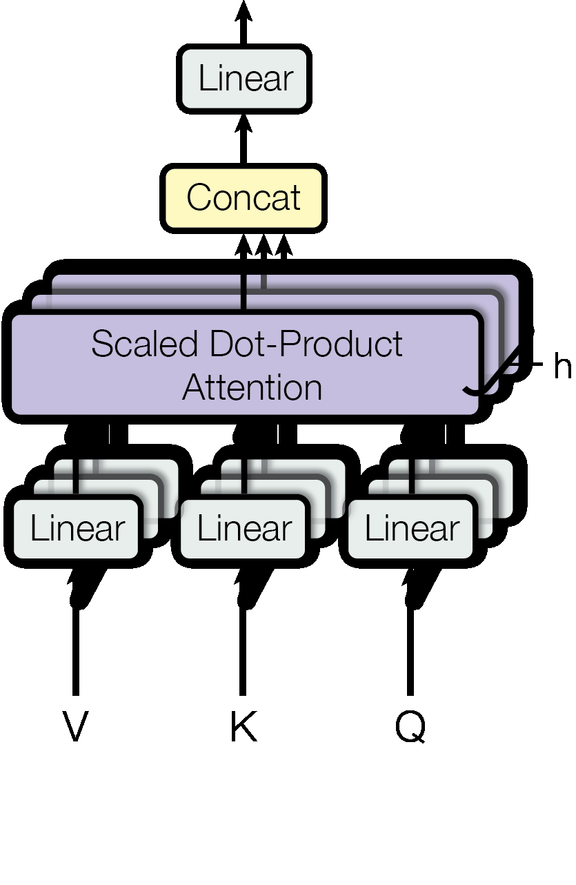

主流的序列转导模型（Sequence Transduction Models）基于复杂的循环神经网络或卷积神经网络，通常包含一个编码器和一个解码器。性能最优的模型还通过注意力机制将编码器与解码器相连。本文提出了一种全新的简单网络架构——Transformer，它完全基于注意力机制，彻底摒弃了循环结构与卷积操作。在两项机器翻译任务上的实验表明，这些模型在质量上更加优越，同时具有更强的并行化能力，所需训练时间也显著减少。我们的模型在 WMT 2014 英德翻译任务上取得了 28.4 BLEU 的成绩，超越现有最佳结果（包含集成模型）逾 2 个 BLEU 分数。在 WMT 2014 英法翻译任务上，我们的模型在 8 块 GPU 上训练 3.5 天后，建立了新的单模型最优 BLEU 分数 41.8，仅占文献中最佳模型训练成本的一小部分。我们还通过将 Transformer 成功应用于英语成分句法分析任务（包括大规模和有限训练数据两种条件），证明了其良好的泛化能力。
1引言
循环神经网络（RNN），尤其是长短时记忆网络（LSTM）[13] 和门控循环单元（GRU）[7]，已被确立为序列建模与转导问题（如语言建模和机器翻译 [35, 2, 5]）的最先进方法。此后，大量工作不断推进循环语言模型和编码器-解码器架构的边界 [38, 24, 15]。
循环模型通常沿输入与输出序列的符号位置进行逐步计算。将位置对齐到计算时间步，它们生成一系列隐藏状态 ht，该状态是前一隐藏状态 ht−1 和位置 t 处输入的函数。这种固有的顺序性排除了训练样本内部的并行化，而这在序列较长时会成为关键瓶颈——内存限制制约了跨样本的批量处理规模。近期工作通过分解技巧 [21] 和条件计算 [32] 显著提升了计算效率，同时在后者情形下也改善了模型性能。然而，序列计算的根本约束依然存在。
注意力机制已成为各种序列建模和转导模型的重要组成部分，它允许对依赖关系进行建模，而无需考虑其在输入或输出序列中的距离 [2, 19]。然而，除少数情况 [27] 外，这类注意力机制通常都与循环网络结合使用。
本文提出 Transformer——一种摒弃循环结构、完全依赖注意力机制来捕获输入与输出之间全局依赖关系的模型架构。Transformer 允许显著更多的并行化，并且在 8 块 P100 GPU 上仅训练约 12 小时，即可在翻译质量上达到新的最优水平。
2背景
减少序列计算的目标也构成了扩展神经 GPU（Extended Neural GPU）[16]、ByteNet [18] 和 ConvS2S [9] 的研究基础，这些模型均使用卷积神经网络作为基本构建模块，并行计算所有输入与输出位置的隐藏表示。在这些模型中，关联两个任意输入或输出位置信号所需的操作数量，随位置间距的增大而增长——ConvS2S 呈线性增长，ByteNet 呈对数增长。这使得学习远距离位置之间的依赖关系更加困难 [12]。而在 Transformer 中，这被压缩为常数次操作，代价是由于对注意力加权位置取平均而导致有效分辨率降低——我们通过第 3.2 节介绍的多头注意力（Multi-Head Attention）来抵消这一效应。
自注意力（Self-attention，有时也称为内部注意力）是一种将单一序列的不同位置相互关联以计算该序列表示的注意力机制。自注意力已在阅读理解、抽象摘要、文本蕴含以及学习任务无关的句子表示等各类任务中取得成功 [4, 27, 28, 22]。
端到端记忆网络（End-to-end memory networks）基于循环注意力机制而非序列对齐的循环，已被证明在简单语言问答和语言建模任务上表现良好 [34]。
据我们所知，Transformer 是第一个完全依赖自注意力来计算输入和输出表示、而不使用序列对齐的 RNN 或卷积的转导模型。在后续章节中，我们将描述 Transformer、阐述自注意力的动机，并讨论其相较于 [17, 18] 和 [9] 等模型的优势。
3模型架构
大多数竞争性的神经序列转导模型采用编码器-解码器结构 [5, 2, 35]。编码器将输入符号表示序列 (x1, …, xn) 映射为连续表示序列 z = (z1, …, zn)。给定 z，解码器随后逐元素地生成输出符号序列 (y1, …, ym)。在每个时间步，模型是自回归的 [10]，在生成下一个符号时将之前生成的符号作为额外输入。
Transformer 遵循这一整体架构，对编码器和解码器均使用堆叠的自注意力层与逐点全连接层，分别对应图 1 的左半部分和右半部分。

3.1 编码器与解码器堆栈
编码器（Encoder）：编码器由 N = 6 个相同层的堆栈组成。每层包含两个子层：第一个是多头自注意力机制，第二个是简单的逐位置全连接前馈网络。我们在每个子层周围使用残差连接 [11]，随后进行层归一化 [1]。即每个子层的输出为 LayerNorm(x + Sublayer(x))，其中 Sublayer(x) 是子层自身实现的函数。为便于实现这些残差连接，模型中所有子层以及嵌入层均产生维度 dmodel = 512 的输出。
解码器（Decoder）：解码器同样由 N = 6 个相同层的堆栈组成。除每个编码器层的两个子层外，解码器还插入了第三个子层，用于对编码器堆栈的输出执行多头注意力。与编码器类似，我们在每个子层周围使用残差连接，随后进行层归一化。我们还对解码器堆栈中的自注意力子层进行了修改，以防止位置关注其后续位置。这种掩蔽操作，结合输出嵌入偏移一个位置的事实，确保了对位置 i 的预测只能依赖位置小于 i 的已知输出。
3.2 注意力机制
注意力函数可被描述为将一个查询（query）和一组键值对（key-value pairs）映射到输出，其中查询、键、值和输出均为向量。输出被计算为值的加权和，其中分配给每个值的权重由查询与对应键的兼容性函数计算得出。
3.2.1 缩放点积注意力（Scaled Dot-Product Attention）
我们将特定的注意力形式称为"缩放点积注意力"（图 2 左）。输入包括维度为 dk 的查询和键，以及维度为 dv 的值。我们计算查询与所有键的点积，将每个结果除以 √dk，并应用 softmax 函数以得到值上的权重。
实际操作中，我们将一组查询同时打包成矩阵 Q 来计算注意力函数。键和值同样分别打包成矩阵 K 和 V。输出矩阵的计算公式如下：
最常用的两种注意力函数是加性注意力（additive attention）[2] 和点积（乘性）注意力（dot-product attention）。点积注意力与我们的算法相同，只是缺少 1/√dk 的缩放因子。加性注意力使用带有单个隐藏层的前馈网络来计算兼容性函数。尽管两者理论复杂度相近，但点积注意力在实践中速度更快且空间效率更高，因为它可以通过高度优化的矩阵乘法代码实现。
对于较小的 dk 值，两种机制表现相近；但对于较大的 dk，不带缩放的点积注意力则不如加性注意力 [3]。我们推测，对于较大的 dk，点积的量级变得很大，将 softmax 函数推入梯度极小的区域。4 为抵消这一效应，我们将点积缩放 1/√dk。


3.2.2 多头注意力（Multi-Head Attention）
我们发现，与其用 dmodel 维的键、值和查询执行单一注意力函数，不如将查询、键和值分别用不同的、可学习的线性投影 h 次投影到 dk、dk 和 dv 维度，效果更好。在这些投影版本的查询、键和值上，我们并行执行注意力函数，产生 dv 维的输出值。这些输出被拼接后再次进行投影，得到最终值，如图 2（右）所示。
多头注意力允许模型在不同位置同时关注来自不同表示子空间的信息。使用单一注意力头时，平均操作会抑制这种能力。
其中 headi = Attention(QWiQ, KWiK, VWiV)
其中，投影矩阵为可学习参数：WiQ ∈ ℝdmodel×dk、WiK ∈ ℝdmodel×dk、WiV ∈ ℝdmodel×dv，WO ∈ ℝhdv×dmodel。
本工作中使用 h = 8 个并行注意力头。对于每个头，我们使用 dk = dv = dmodel/h = 64。由于每个头的维度减小，总计算成本与全维度单头注意力相近。
3.2.3 注意力机制在模型中的应用
Transformer 以三种不同方式使用多头注意力：
• 编码器-解码器注意力层：查询来自前一解码器层，而记忆键和值来自编码器的输出。这使解码器中的每个位置都能关注输入序列的所有位置，模拟了经典编码器-解码器模型中常见的序列到序列注意力机制 [38, 2, 9]。
• 编码器自注意力层：编码器包含自注意力层，其中所有键、值和查询均来自同一位置——编码器前一层的输出。编码器中每个位置都可以关注编码器前一层的所有位置。
• 解码器自注意力层（带掩蔽）：类似地，解码器中的自注意力层允许解码器中的每个位置关注解码器中直至并包括该位置的所有位置。为了保持自回归性，我们需要阻止解码器中的左向信息流。通过在缩放点积注意力内部屏蔽（设为 −∞）softmax 输入中对应非法连接的所有值来实现这一点。
3.3 逐位置前馈网络
除注意力子层外，编码器和解码器中的每一层还包含一个全连接前馈网络，该网络分别独立地应用于每个位置，由两个线性变换和一个 ReLU 激活函数组成：
尽管不同位置的线性变换相同，但它们在层与层之间使用不同的参数。另一种描述方式是两个核大小为 1 的卷积。输入和输出的维度为 dmodel = 512，而内层维度为 dff = 2048。
3.4 嵌入与 Softmax
与其他序列转导模型类似，我们使用可学习的嵌入将输入词符（token）和输出词符转换为维度 dmodel 的向量。我们还使用通常的可学习线性变换和 softmax 函数将解码器输出转换为预测下一词符的概率。本模型中，我们在两个嵌入层和 pre-softmax 线性变换之间共享相同的权重矩阵，类似于 [30]。在嵌入层中，我们将这些权重乘以 √dmodel。
3.5 位置编码（Positional Encoding）
由于我们的模型不包含循环也不包含卷积，为了使模型能够利用序列的顺序信息，我们必须注入一些关于序列中词符相对或绝对位置的信息。为此，我们在编码器和解码器堆栈底部的输入嵌入中添加"位置编码"。位置编码与嵌入具有相同的维度 dmodel，因此可以直接相加。
本工作中，我们使用不同频率的正弦和余弦函数：
PE(pos, 2i+1) = cos(pos / 100002i / dmodel)
其中 pos 为位置，i 为维度。即位置编码的每个维度对应一个正弦波，波长从 2π 到 10000·2π 呈几何级数变化。我们选择这种函数是因为我们假设它可以让模型轻松学会通过相对位置进行关注，因为对于任何固定偏移量 k，PEpos+k 可以表示为 PEpos 的线性函数。
我们也实验了使用可学习的位置嵌入 [9]，发现两种版本产生了几乎相同的结果（见表 3 第 E 行）。我们选择正弦版本是因为它可能允许模型外推到比训练时遇到的更长的序列。
4为什么选择自注意力
本节将从多个角度对自注意力层与循环和卷积层进行比较，这些循环和卷积层通常用于将可变长度的符号表示序列 (x1, …, xn) 映射到另一个等长序列 (z1, …, zn)，例如典型序列转导编码器或解码器中的隐藏层。我们从三个角度进行比较：每层的总计算复杂度；可并行化的计算量（以所需最少顺序操作数衡量）；以及网络中远程依赖关系之间的路径长度。
学习远程依赖关系是许多序列转导任务中的关键挑战。影响这种依赖关系学习能力的一个关键因素是前向和后向信号在网络中需要经过的路径长度。输入与输出序列中任意位置组合之间的路径越短，就越容易学习远程依赖关系 [12]。因此，我们还比较了由不同层类型组成的网络中任意两个输入和输出位置之间的最大路径长度。
如表 1 所示，自注意力层以恒定数量的顺序执行操作连接所有位置，而循环层则需要 O(n) 次顺序操作。在计算复杂度方面，当序列长度 n 小于表示维度 d 时，自注意力层比循环层更快，而这在机器翻译中最先进的模型（如词片（word-piece）和字节对（byte-pair）表示）所使用的句子表示中最为常见。为了提高处理非常长序列的计算性能，自注意力可以被限制为只考虑输入序列中以相应输出位置为中心、大小为 r 的邻域。这将把最大路径长度增加到 O(n/r)。我们计划在未来工作中进一步研究这种方法。
核宽为 k < n 的单个卷积层无法连接所有输入和输出位置对。要做到这一点，在连续核的情况下需要 O(n/k) 个卷积层，在扩展卷积的情况下需要 O(logk(n)) 个，从而增加了网络中任意两个位置之间最长路径的长度。卷积层通常比循环层代价更高，其倍数为 k。但可分离卷积（Separable convolutions）[6] 将复杂度大幅降低至 O(k·n·d + n·d2)。然而，即使 k = n，可分离卷积的复杂度也与自注意力层加逐点前馈层的组合相同，正是本模型采用的方法。
作为附带好处，自注意力可以产生更具可解释性的模型。我们从模型中检查注意力分布，并在附录中展示和讨论了一些示例。各个注意力头不仅清晰地学会执行不同的任务，许多还表现出与句子的句法和语义结构相关的行为。
| 层类型 | 每层复杂度 | 顺序操作数 | 最大路径长度 |
|---|---|---|---|
| 自注意力（Self-Attention） | O(n² · d) | O(1) | O(1) |
| 循环（Recurrent） | O(n · d²) | O(n) | O(n) |
| 卷积（Convolutional） | O(k · n · d²) | O(1) | O(logk(n)) |
| 受限自注意力（Self-Attention, restricted） | O(r · n · d) | O(1) | O(n/r) |
5训练
本节描述我们模型的训练方案。
5.1 训练数据与批处理
我们在标准 WMT 2014 英德数据集上进行训练，该数据集包含约 450 万个句子对。句子使用字节对编码（BPE）[31] 进行编码，共享源-目标词表，包含约 37,000 个词符。对于英法翻译，我们使用了规模更大的 WMT 2014 英法数据集，包含 3600 万个句子，并将词符拆分为 32,000 个词片（word-piece）词表 [38]。句子对被近似按序列长度批量处理。每个训练批次包含一组句子对，对应约 25,000 个源词符和 25,000 个目标词符。
5.2 硬件与训练进度
我们在一台配备 8 块 NVIDIA P100 GPU 的机器上训练模型。对于使用本文描述超参数的基础模型，每个训练步骤耗时约 0.4 秒。基础模型共训练 100,000 步（12 小时）。对于大模型（表 3 末尾一行），步骤时间为 1.0 秒，共训练 300,000 步（3.5 天）。
5.3 优化器
我们使用 Adam 优化器 [20]，参数设置为 β1 = 0.9，β2 = 0.98，ε = 10−9。我们根据以下公式在训练过程中调整学习率：
这对应于在前 warmup_steps 步线性增加学习率，此后按步骤数的反平方根成比例降低。我们使用 warmup_steps = 4000。
5.4 正则化
训练期间我们采用三种正则化方式：
残差 Dropout：我们对每个子层的输出应用 dropout，在将其与子层输入相加并进行归一化之前。此外，我们对编码器和解码器堆栈中的嵌入与位置编码之和也应用 dropout。基础模型使用 Pdrop = 0.1 的比率。
标签平滑（Label Smoothing）：训练期间，我们使用 εls = 0.1 的标签平滑值 [36]。这虽然使困惑度（perplexity）变差（因为模型学会了更不确定），但提高了准确率和 BLEU 分数。
6结果
6.1 机器翻译
在 WMT 2014 英德翻译任务上，大 Transformer 模型（表 2，Transformer (big)）比之前报道的最佳模型（包括集成模型）超出逾 2.0 个 BLEU，建立了新的最优 BLEU 分数 28.4。该模型的配置列于表 3 末尾一行，训练在 8 块 P100 GPU 上耗时 3.5 天。即使是我们的基础模型，也以更少的训练成本超越了所有之前发布的模型和集成模型。
在 WMT 2014 英法翻译任务上，大模型取得了 BLEU 分数 41.0，优于所有之前发布的单模型，训练成本不到之前最佳模型的 1/4。用于英法翻译的大 Transformer 模型使用 Pdrop = 0.1，而非 0.3。
| 模型 | 英→德 BLEU | 英→法 BLEU | 训练成本 (FLOPs) |
|---|---|---|---|
| ByteNet [18] | 23.75 | — | — |
| Deep-Att + PosUnk [39] | — | 39.2 | 1.0 × 10²⁰ |
| GNMT + RL [38] | 24.6 | 41.16 | 2.3 × 10¹⁹ |
| ConvS2S [9] | 25.16 | 40.46 | 9.6 × 10¹⁸ |
| MoE [32] | 26.03 | 40.56 | 2.0 × 10¹⁹ |
| Transformer (base) | 27.3 | 38.1 | 3.3 × 10¹⁸ |
| Transformer (big) | 28.4 | 41.0 | 2.3 × 10¹⁹ |
6.2 模型变体
为了评估 Transformer 不同组件的重要性，我们以不同方式调整基础模型，测量英德翻译性能在开发集 newstest2013 上的变化。我们使用第 5.3 节描述的束搜索（beam search），但不使用检查点平均（checkpoint averaging）。
表 3 中，第 A 行中我们改变注意力头的数量以及注意力键和值的维度，同时保持计算量恒定。单头注意力比最佳配置低 0.9 BLEU，注意力头过多也会导致质量下降。
在第 B 行中，我们观察到减小注意力键的维度 dk 会损害模型质量，这表明确定兼容性并非易事，比点积更复杂的兼容性函数可能更有益。在第 C 和 D 行中，我们观察到正如预期，更大的模型性能更好，而 dropout 对于避免过拟合非常有帮助。在第 E 行中，我们将正弦位置编码替换为可学习的位置嵌入 [9]，观察到与基础模型几乎相同的结果。
6.3 英语成分句法分析
为了评估 Transformer 是否能推广到其他任务，我们在英语成分句法分析上进行了实验。该任务面临特定挑战：输出受到较强的结构约束，且输出明显长于输入。此外，RNN 序列到序列模型在小数据场景下无法取得最优结果 [37]。
我们在 Penn Treebank [25] 的 Wall Street Journal（WSJ）部分训练了一个 dmodel = 1024 的 4 层 Transformer，约包含 40K 个训练句子。我们还在半监督环境中进行训练，使用了来自 BerkleyParser 语料库的约 1700 万个句子的更大的高置信度和 BerkleyParser 语料库 [37]。对于仅 WSJ 的配置，我们使用了 16K 词符的词表；对于半监督配置，则使用了 32K 词符的词表。
我们进行了少量实验选择了 dropout、注意力和残差（第 5.4 节）、学习率和束搜索大小，其他所有参数均与英德翻译基础模型保持不变。在推理期间，我们将最大输出长度增加到输入长度 + 300，束搜索大小为 21，α = 0.3，在 WSJ 和半监督设置下均适用。
结果如表 4 所示，我们的模型在仅 WSJ 训练数据的情况下表现出色，超越了之前除循环神经网络语法（RNNG）[8] 之外的所有集成模型。与 RNN 序列到序列模型 [37] 相比，即使是仅有 40K 句子的 WSJ 训练集，Transformer 也优于 BerkeleyParser [29]。
7结论
本文介绍了 Transformer——第一个完全基于注意力的序列转导模型，用多头自注意力替代了编码器-解码器架构中最常用的循环层。
对于翻译任务，Transformer 的训练速度明显快于基于循环或卷积层的架构。我们在 WMT 2014 英德和英法翻译任务上取得了新的最优水平。在英德翻译任务上，我们最好的模型甚至超越了之前报道的所有集成模型。
我们对基于注意力的模型的未来感到兴奋，并计划将其应用于其他任务。我们计划将 Transformer 扩展到涉及文本之外的输入和输出模态的问题，并研究局部、受限的注意力机制，以有效处理图像、音频和视频等大型输入和输出。使生成过程更少顺序化是我们的另一个研究目标。
训练和评估所用代码可在以下地址获取：https://github.com/tensorflow/tensor2tensor。
参考文献
[1] Jimmy Lei Ba, Jamie Ryan Kiros, and Geoffrey E Hinton. Layer normalization. arXiv preprint arXiv:1607.06450, 2016.
[2] Dzmitry Bahdanau, Kyunghyun Cho, and Yoshua Bengio. Neural machine translation by jointly learning to align and translate. ICLR 2015, 2014.
[3] Denny Britz, Anna Goldie, Minh-Thang Luong, and Quoc V. Le. Massive exploration of neural machine translation architectures. CoRR, abs/1703.03906, 2017.
[4] Jianpeng Cheng, Li Dong, and Mirella Lapata. Long short-term memory-networks for machine reading. arXiv preprint arXiv:1601.06733, 2016.
[5] Kyunghyun Cho, Bart van Merrienboer, Caglar Gulcehre, Fethi Bougares, Holger Schwenk, and Yoshua Bengio. Learning phrase representations using rnn encoder-decoder for statistical machine translation. arXiv preprint arXiv:1406.1078, 2014.
[6] Francois Chollet. Xception: Deep learning with depthwise separable convolutions. arXiv preprint arXiv:1610.02357, 2016.
[7] Junyoung Chung, Çaglar Gülçehre, KyungHyun Cho, and Yoshua Bengio. Empirical evaluation of gated recurrent neural networks on sequence modeling. CoRR, abs/1412.3555, 2014.
[8] Chris Dyer, Adhiguna Kuncoro, Miguel Ballesteros, and Noah A. Smith. Recurrent neural network grammars. In NAACL 2016, 2016.
[9] Jonas Gehring, Michael Auli, David Grangier, Denis Yarats, and Yann N. Dauphin. Convolutional sequence to sequence learning. arXiv preprint arXiv:1705.03122v2, 2017.
[10] Alex Graves. Generating sequences with recurrent neural networks. arXiv preprint arXiv:1308.0850, 2013.
[11] Kaiming He, Xiangyu Zhang, Shaoqing Ren, and Jian Sun. Deep residual learning for image recognition. In CVPR, 2016.
[12] Sepp Hochreiter, Yoshua Bengio, Paolo Frasconi, and Jürgen Schmidhuber. Gradient flow in recurrent nets: the difficulty of learning long-term dependencies, 2001.
[13] Sepp Hochreiter and Jürgen Schmidhuber. Long short-term memory. Neural computation, 9(8):1735–1780, 1997.
[14] Zhongqiang Huang and Mary Harper. Self-training PCFG grammars with latent annotations across languages. In EMNLP 2009, 2009.
[15] Łukasz Kaiser and Samy Bengio. Can active memory replace attention? In NIPS 2016, 2016.
[16] Łukasz Kaiser and Ilya Sutskever. Neural GPUs learn algorithms. In ICLR 2016, 2016.
[17] Nal Kalchbrenner, Lasse Espeholt, Karen Simonyan, Aaron van den Oord, Alex Graves, and Koray Kavukcuoglu. Neural machine translation in linear time. arXiv preprint arXiv:1610.10099v2, 2017.
[18] Nal Kalchbrenner and Phil Blunsom. Recurrent continuous translation models. In EMNLP 2013, 2013.
[19] Yoon Kim, Carl Denton, Luong Hoang, and Alexander M. Rush. Structured attention networks. In ICLR 2017, 2017.
[20] Diederik Kingma and Jimmy Ba. Adam: A method for stochastic optimization. In ICLR 2015, 2015.
[21] Oleksii Kuchaiev and Boris Ginsburg. Factorization tricks for LSTM networks. arXiv preprint arXiv:1703.10722, 2017.
[22] Zhouhan Lin, Minwei Feng, Cicero Nogueira dos Santos, Mo Yu, Bing Xiang, Bowen Zhou, and Yoshua Bengio. A structured self-attentive sentence embedding. arXiv preprint arXiv:1703.03130, 2017.
[23] Minh-Thang Luong, Hieu Pham, and Christopher D Manning. Effective approaches to attention-based neural machine translation. arXiv preprint arXiv:1508.04025, 2015.
[24] Minh-Thang Luong and Christopher D. Manning. Achieving open vocabulary neural machine translation with hybrid word-character models. In ACL 2016, 2016.
[25] Mitchell P Marcus, Mary Ann Marcinkiewicz, and Beatrice Santorini. Building a large annotated corpus of english: The penn treebank. Computational linguistics, 19(2):313–330, 1993.
[26] David McClosky, Eugene Charniak, and Mark Johnson. Effective self-training for parsing. In HLT-NAACL 2006, 2006.
[27] Ankur Parikh, Oscar Täckström, Dipanjan Das, and Jakob Uszkoreit. A decomposable attention model. In EMNLP 2016, 2016.
[28] Romain Paulus, Caiming Xiong, and Richard Socher. A deep reinforced model for abstractive summarization. arXiv preprint arXiv:1705.04304, 2017.
[29] Slav Petrov, Leon Barrett, Romain Thibaux, and Dan Klein. Learning accurate, compact, and interpretable tree annotation. In ACL 2006, 2006.
[30] Ofir Press and Lior Wolf. Using the output embedding to improve language models. arXiv preprint arXiv:1608.05859, 2016.
[31] Rico Sennrich, Barry Haddow, and Alexandra Birch. Neural machine translation of rare words with subword units. arXiv preprint arXiv:1508.07909, 2015.
[32] Noam Shazeer, Azalia Mirhoseini, Krzysztof Maziarz, Andy Davis, Quoc Le, Geoffrey Hinton, and Jeff Dean. Outrageously large neural networks: The sparsely-gated mixture-of-experts layer. arXiv preprint arXiv:1701.06538, 2017.
[33] Nitish Srivastava, Geoffrey E Hinton, Alex Krizhevsky, Ilya Sutskever, and Ruslan Salakhutdinov. Dropout: a simple way to prevent neural networks from overfitting. Journal of Machine Learning Research, 15(1):1929–1958, 2014.
[34] Sainbayar Sukhbaatar, Arthur Szlam, Jason Weston, and Rob Fergus. End-to-end memory networks. In NIPS 2015, 2015.
[35] Ilya Sutskever, Oriol Vinyals, and Quoc VV Le. Sequence to sequence learning with neural networks. In NIPS 2014, 2014.
[36] Christian Szegedy, Vincent Vanhoucke, Sergey Ioffe, Jonathon Shlens, and Zbigniew Wojna. Rethinking the inception architecture for computer vision. CoRR, abs/1512.00567, 2015.
[37] Vinyals & Kaiser, Koo, Petrov, Sutskever, and Hinton. Grammar as a foreign language. In NIPS 2015, 2015.
[38] Yonghui Wu, Mike Schuster, et al. Google's neural machine translation system: Bridging the gap between human and machine translation. arXiv preprint arXiv:1609.08144, 2016.
[39] Jie Zhou, Ying Cao, Xuguang Wang, Peng Li, and Wei Xu. Deep recurrent models with fast-forward connections for neural machine translation. CoRR, abs/1606.04199, 2016.
[40] Muhua Zhu, Yue Zhang, Wenliang Chen, Min Zhang, and Jingbo Zhu. Fast and accurate shift-reduce constituent parsing. In ACL 2013, 2013.
* 等同贡献，作者顺序随机排列。Jakob 提出了用自注意力替换 RNN 的想法并启动了相关评估工作；Ashish 与 Illia 一起设计并实现了第一个 Transformer 模型；Noam 提出了缩放点积注意力、多头注意力和无参数位置表示方法；Niki 设计、实现、调优和评估了无数模型变体；Llion 负责了最初的代码库以及高效推理和可视化；Łukasz 与 Aidan 共同设计了 tensor2tensor 的各个部分并实现了它，极大地提升了结果质量并大幅加速了研究进展。
† 在 Google Brain 期间完成的工作。 ‡ 在 Google Research 期间完成的工作。
原文：Vaswani et al., "Attention Is All You Need", arXiv:1706.03762v7 (2017) · 中文翻译版本仅供学习参考